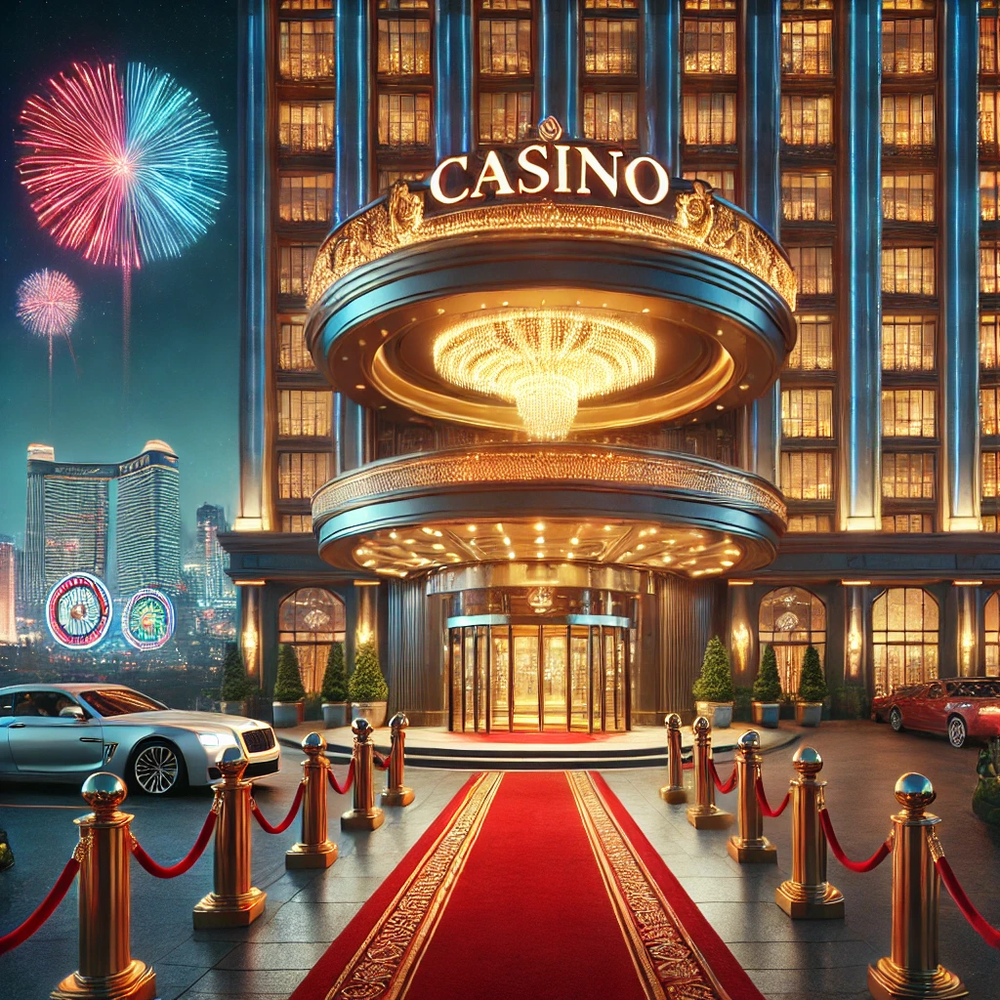
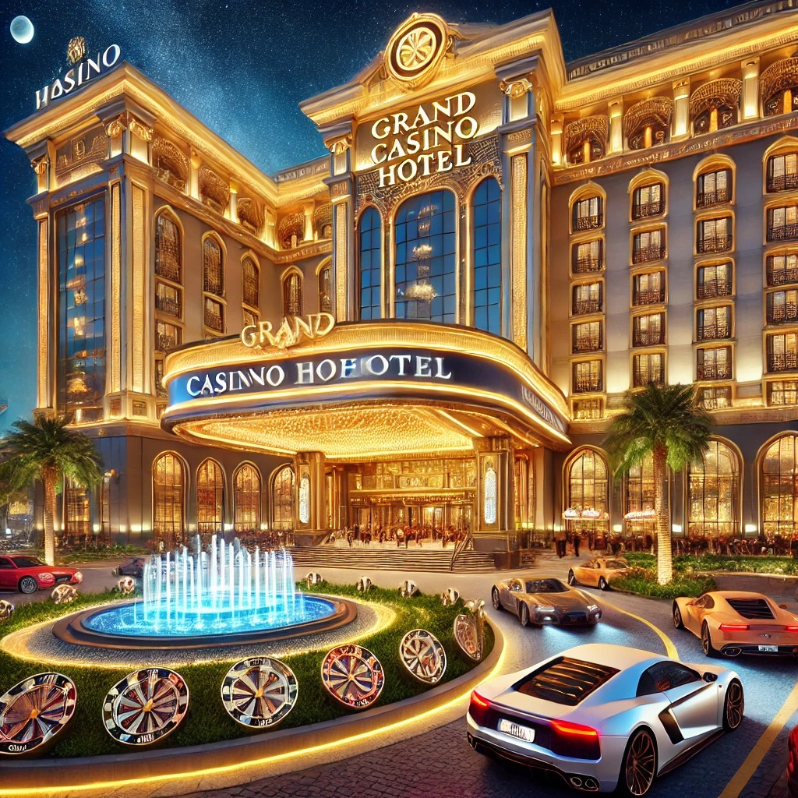
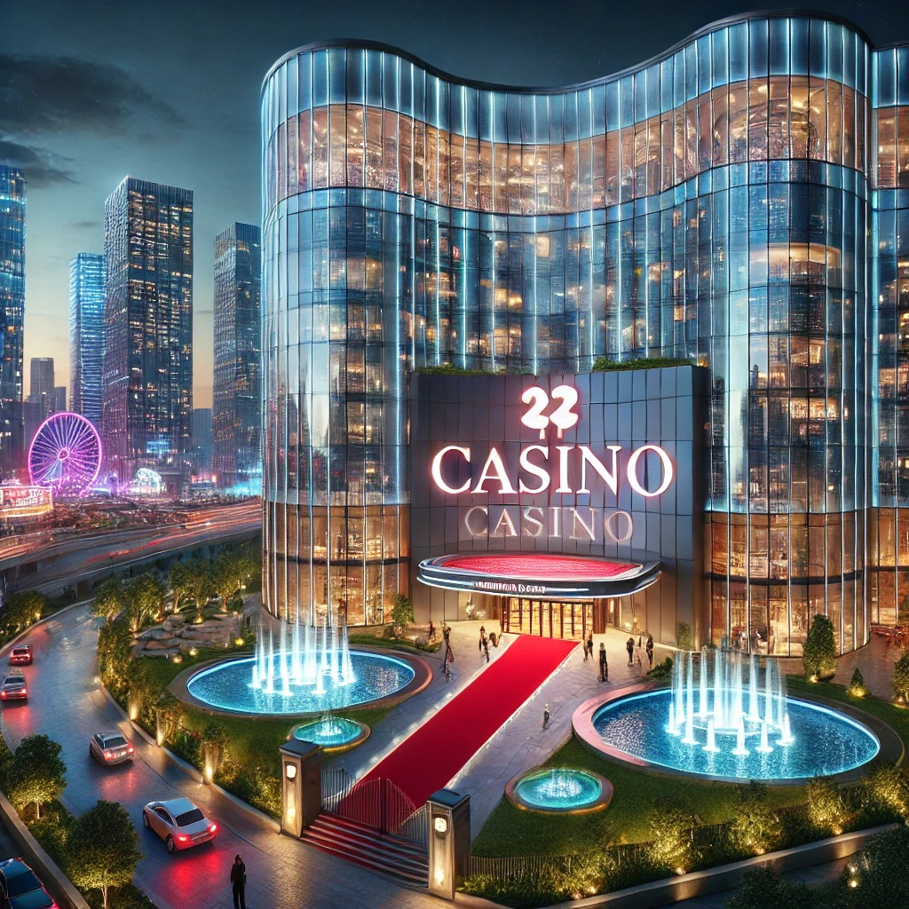

Welcome to the world of luxury and entertainment, in Netherlands finest Casino Hotels and Casino Resorts. Whether you are looking for the excitement of world-class gaming or sumptuous accommodations, our carefully selected offer meets all traveling needs in Casino Hotels in Netherlands. Discover the best Casino Resorts in Netherlands, where exceptional hospitality meets unforgettable casino experiences, all set in a magical European destination. Start your adventure today!

Price / Night: About 40,000 HUF
In the heart of Budapest, Casino Hotel Budapest is the perfect combination of luxury accommodation and exciting casino experiences. Modern rooms, restaurants, and exclusive games guarantee an unforgettable stay in one of the best hotels in the capital.

Price / Night: About 60,000 HUF
Located along the Danube, Las Vegas Casino Sofitel Budapest offers stunning panoramas and world-class services. You can try the best games in your own casino while enjoying the comfort of luxury accommodations.

Price / Night: About 35,000 HUF
In the center of Debrecen, the Grand Casino Hotel is an ideal choice for both business and leisure travelers. Direct access to spacious rooms and a casino guarantees fun and relaxation.
Price / Night: About 30,000 HUF
Just a few minutes from Budapest, EuroVegas Hotel & Casino offers special entertainment options. Modern rooms and a world-class casino make it an attractive choice for lovers of gaming and relaxation.
Price / Night: About 50,000 HUF
Located next to the Roman ruins of Aquincum, Aquincum Hotel Budapest offers not only luxury hotel accommodations but also a casino. The wellness center and elegant rooms provide perfect relaxation.
Price / Night: About 45,000 HUF
Hévíz is home to the world-famous Casino Resort Hévíz, offering a perfect combination of relaxation and gaming. Spacious rooms, wellness opportunities, and the casino are guaranteed to make your stay memorable.
Price / Night: About 40,000 HUF
The iconic Aranybika Hotel in Debrecen offers guests their own casino. The comfortable rooms and modern services of this historic building provide a perfect choice for relaxation and entertainment.
Price / Night: About 35,000 HUF
Located in the picturesque downtown of Pécs, Casino Hotel offers modern rooms and exclusive gaming experiences. Its central location makes it an ideal choice for discovering the city.
Price / Night: About 50,000 HUF
Thermal & Casino Hotel Sárvár offers a unique experience in a city famous for its therapeutic herbs. The casino, wellness center, and comfortable rooms guarantee luxury and relaxation.
Price / Night: About 50,000 HUF
Located on the shores of Lake Balaton, Silver Resort Hotel offers not only beautiful views but also exclusive casino experiences. The hotel is the perfect venue for both relaxation and entertainment with elegant rooms and first-rate services.